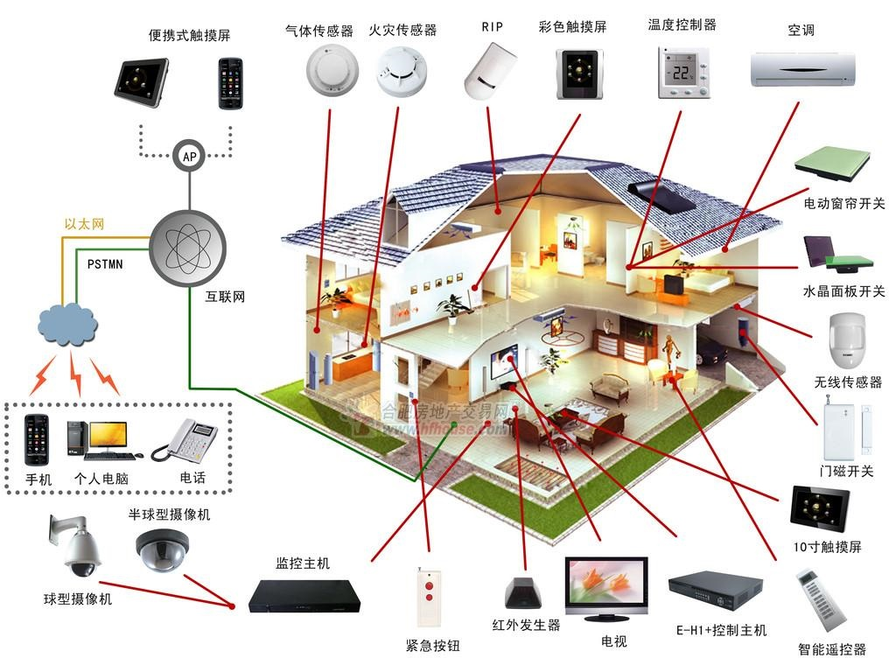

智能家居种类—智能家居系统
智能家居系统通俗来讲是通过主机网关来控制所有智能家居设备的系统。
智能家居系统中的小分类有：主机网关、智能照明、安防报警、家电控制、窗帘窗户、智能门锁、家庭影院、背景音乐、场景控制、环境控制、健康安全、视频监控、中继器、协议转换器、可视对讲、智能模块等分类。
多角度分析智能家居种类和分类
这里以主机网关来做详细介绍：
智能主机网关是智能家居系统的核心，其他所有智能设备想要联动必须通过智能主机网关才能实现。
双向无线传输，智能家居产品均采用双向无线传输，系统开关状态可即时呈现，一目了然。
快速安装、维修，智能家居系统全部采用无线传输，安装方便，而且方便移动和再安装。

智能家居种类—智能单品
智能单品是通过手机APP来控制的单个智能产品，与智能家居系统比起来，智能单品只能够实现单个方面的智能化。
多角度分析智能家居种类和分类
智能单品的小分类有：健康监测、开关插座、摄像头、儿童智能产品、老人智能产品、环境监测、报警安防、智能盒子、智能灯、灌溉喂宠、影音娱乐、创意智能产品、智能锁、智能魔镜、智能手环等。
智能单品中有些产品也能够起到和智能家居系统类似的功能，但是和智能家居系统相比，有些差距。
这里以开关插座来做介绍：
智能单品中的智能插座，在普通插线板上一插，就能够立即使普通插座变成智能插座，能够起到节能、环保、安全防护等作用。用户在使用智能插座的时候，只需提前设置好时间，等时间一到，就可以立即断电。智能插座是现在非常普遍的智能单品。
智能家居种类—智能设备
智能设备是智能家居系统和智能单品中比较大型的智能产品，其中也包括智能套装在内。现在最常见的智能设备是智能空调、智能电视等。
智能设备的小分类有：智能家电、智能机器人、智能套装、智能厨房、智能卫浴、空气净化、智能扫地机、暖通净水、智能手表、智能家具等。